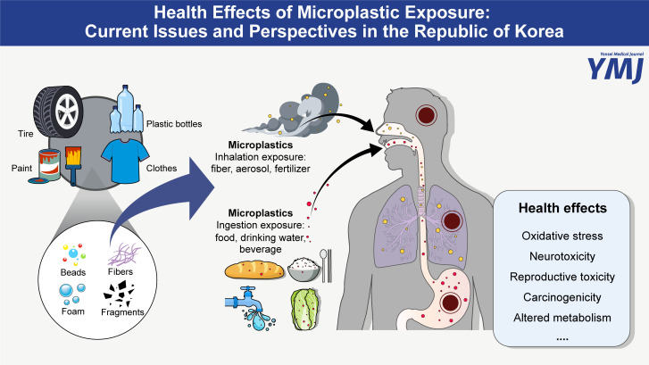

Introduction to Microplastics
1. What are microplastics?

Microplastics are pieces of plastic that are less 5 mm in length, where plastics are synthetic materials that use polymers as their main ingredient. Although their plasticity make them very easy to extend, model, therefore to be made into many useful products in everyday life, since they degrade slowly, they often cause pollution issues.
2. Microplastics' effects on the environment
- Micro, or even smaller, nano plastics can be embedded in animal tissue through biological processes such as ingestion and respiration. It takes up to 14 days for microplastics to pass through an animal.
- Microplastics are capable of lofting into the atmosphere. By travelling thousands of miles, they can affect the formation of clouds, therefore potentially impacting temperature, rainfall, and even climate change.
- Once absorbed, microplastics can distribute to the liver, spleen, heart, lungs, thymus, reproductive organs, kidneys and even the brain (crosses the blood–brain barrier).
- Microplastics can carry organic pollutants and heavy metals from invertebrate organism.
- Microplastics can get ingested easily due to their small size. Furthermore, because of their tiny size, they are impossible to remove once released into the environment.
3. Microplastics’ effect on human health
- The potential link between the presence of microplastics and blood vessels and cardiovascular disease is reported.
- In a study that focuses on the link between microplastics and inflammatory bowel disease, multiple types of microplastics were detected in human feces.
- In the observational study of more than 250 patients who were having tests for carotid artery disease, finding polyethylene in their plaque was associated with heart problems compared with those without having any plastics detected.

4. How to prevent microplastics pollution
- In October 2023, the European Union set policies to restrict the intentional addition of microplastics to products and set the goal of reducing microplastics pollution by 30% by 2030. In a wider scope, the UN Environmental Assembly, with 175 nations in support, adopted a resolution on 2 March 2022 to develop a treaty that strives to draft the treaty of plastics by the end of 2024.
- To deal with microplastics, Membrane bioreactors (MBR) can be used. MBR can remove 99.9% of microplastics more efficiently than other approaches.
- More traditional methods such as waste management can also be refined to cope with the problem. Overall, primary treatment involves physical settling of insoluble solids from the wastewater stream through various mechanisms such as screening, grit removal, oil and grease removal, and sedimentation (with coagulation).